The polynomial kernels are widely used in machine learning and they are one of the default choices to develop kernel-based classification and regression models.
However, they are rarely used and considered in numerical analysis due to their lack of strict positive definiteness. In particular they do not enjoy the
usual property of unisolvency for arbitrary point sets, which is one of the key properties used to build kernel-based interpolation methods.
This work is devoted to establish some initial results for the study of these kernels, and their related interpolation algorithms, in the context of
approximation theory.
We will first prove necessary and sufficient conditions on point sets which guarantee the existence and uniqueness of an interpolant. We will
then study the Reproducing Kernel Hilbert Spaces (or native spaces) of these kernels and their norms, and provide inclusion relations between spaces
corresponding to different kernel parameters. With these spaces at hand, it will be further possible to derive generic error estimates which apply to
sufficiently smooth functions, thus escaping the native space. Finally, we will show how to employ an efficient stable algorithm to these kernels to obtain
accurate interpolants, and we will test them in some numerical experiments.
The polynomial kernels
The polynomial kernels are a family of kernels defined for \( x,y\in\mathbb{R}^d \) by
\[
A_{a,p}(X_N) := \left(k_{a,p}(x_i,x_j)\right)_{i,j=1}^N = V D V^T,
\]
where \[D:=diag\left(d^a_{\zeta^{(1)}}, \dots, d^a_{\zeta^{(M_a)}}\right)\]
Unisolvency
Consequences:
The kernel matrix \(A_{a,p}(X_N)\) is invertible if and only if there exists \(X_N\subset X_{M_a}\) which is \(\mathbb{P}_p^d(\Omega)\)-unisolvent if \(a>0\), or \(\mathbb{H}_p^d(\Omega)\)-unisolvent if \(a=0\).
If \(N=M_a\) and \(X_N\) are \(\mathbb{P}_p^d\)-unisolvent (if \(a>0\)) or \(\mathbb{H}_p^d\)-unisolvent (if \(a=0\)),
then the polynomial kernel interpolant coincides with the polynomial interpolant from the corresponding space.
Let \(a> 0\) and \(X_N\subset\Omega\) pairwise distinct.
For any \(p\geq d (N-1)\) there exists a set \(X_{M_p^d}\subset \Omega\) of \(M_p^d\) points such that \(X_N\subset X_{M_p^d}\) and \(X_{M_p^d}\) is
\(\mathbb{P}_p^d\)-unisolvent.
\[\Downarrow\]
\(A_{a,p}(X_N)\) is invertible if \(p\geq d (N-1)\).
The native space
The native space \(\mathcal{H}_{a, p}(\Omega)\) of \(k_{a,p}\) on \(\Omega\):
\(k_{a,p}(\cdot, x) \in \Omega\) for all \(x\in\Omega\)
If \( a > 0\) then \(\mathcal{H}_{0,p}\subset \mathcal{H}_{a, p}\) with same norm for \(f\in \mathcal{H}_{0, p}\).
If \(a>0\) and \(p,q\in\mathbb{N}\) with \(0\leq q\leq p\), then \(\mathcal{H}_{a, q}\subset\mathcal{H}_{a, p}\) with \(d_p:=p-q\) and
\[
a^{\frac{d_p}{2}} \left\|f\right\|_{\mathcal{H}_{a, p}}
\leq
\left\|f\right\|_{\mathcal{H}_{a, q}}
\leq
a^\frac{d_p}{2} \binom{p}{d_p}^\frac{1}{2} \left\|f\right\|_{\mathcal{H}_{a, p}}.
\]
Stability
Lagrange basis \(\left\{\ell_{i,a,p}\right\}_{i=1}^N\) of \(V_{a,p}(X_N)=\mathrm{span}\{k_{a,p}(\cdot, x):x\in X_N\}\),
Lebesgue function
\[
\lambda_{X_N,a,p}(x):=\sum_{i=1}^N \left|\ell_{i,a,p}(x)\right|,
\]
Let \(a\geq 0\), \(p\in\mathbb{N}\), and \(X\) be \(\mathcal{H}_{a,p}\)-unisolvent.
If \(X\subset X_{M_a}\subset B\subset\mathbb{R}^d\) is \(\mathbb{P}_p^d\)-unisolvent, then
for \(f\in C(B)\)
\[
\|I_{X,a,p} f\|_{\infty,\Omega}
\leq
\Lambda_{X_{M_a},p,B}^{pol} \|f\|_{\infty,B},
\]
where
\(
\Lambda_{X_{M_a},p,B}^{pol}
\)
is the Lebesgue constant for polynomial interpolation of degree \(p\) on \(X_{M_a},B\).
Error estimation
Power function
\[
P_{X,a,p}(x)
:=\sup\limits_{0\neq f\in \mathcal{H}_{a, p}}\frac{\left|f(x) - I_{X,a,p} f(x)\right|}{\|f\|_{\mathcal{H}_{a,p}}}
\]
Let \(X_N\subset\Omega\) be \(\mathcal{H}_{a,p}\)-unisolvent.
For all \(f\in C(\Omega)\) and \(x\in\Omega\)
\[
\begin{align}
&\\
&\left|(f-I_{X,a,p} f)(x)\right| \leq E_{pol}(x) + E_{ker}(x).
\end{align}
\]
Here
\[
E_{pol}(x):=\left(1 + \lambda_{X,a,p}(x)\right)\left\|f-f_p^\star\right\|_{\infty,\Omega}
\]
and
\[
E_{ker}(x)
:=P_{X,a,p}(x) \left\|f^\star - I_{X,a,p}
f_p^\star\right\|_{\mathcal{H}_{a,p}},
\]
with
\[
f_p^\star:=\inf\limits_{g\in \mathbb{P}_p^d(\Omega)}\|f-g\|_{\infty,\Omega}.
\]
New basis
\[V':=
V \begin{bmatrix}I \\ D_2 R_2^T R_1^{-T} D_1^{-1}\end{bmatrix}
\]
Stable computations: Lagrange basis
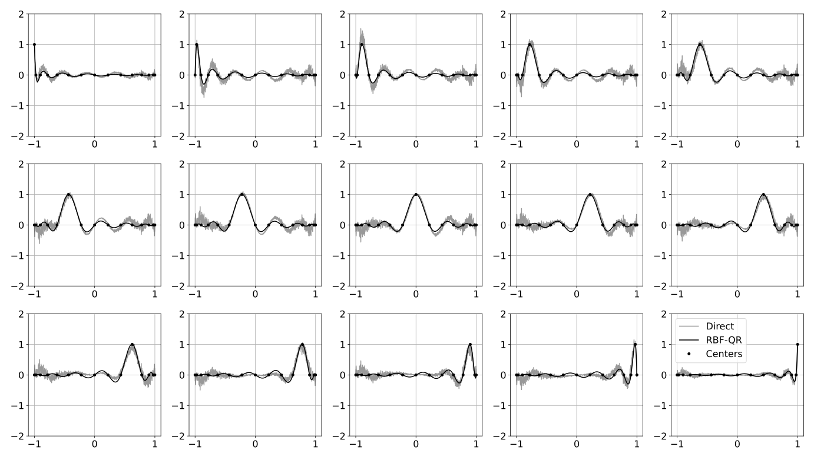
Lagrange functions for the polynomial kernel with \(p=25\) and \(a=10\), for \(N=15\) Chebyshev points (black dots), computed
with the direct method (gray lines) and with RBF-QR (black lines).
Stable computations: Approximation
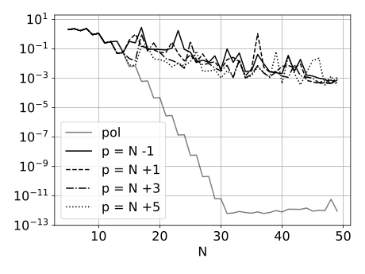
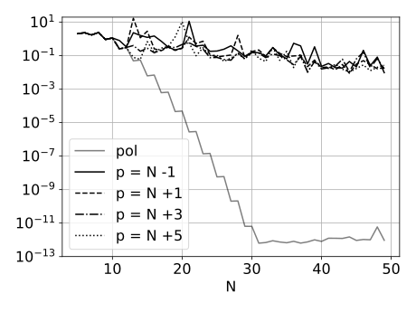
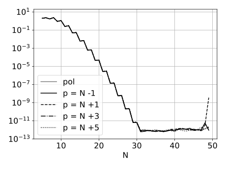
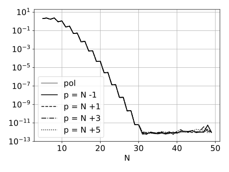
Maximal absolute interpolation error for the function \(f(x) = \cos(10 x)\) using \(N=5, \dots, 50\) Chebyshev points. For each
figure, we test a polynomial interpolant (gray line), and kernel interpolants with various values of \(p\), and \(a=5\) (left column) and \(a=10\) (right column).
The kernel interpolants are computed with the direct method (first row) and with RBF-QR (second row).
Lebesgue function
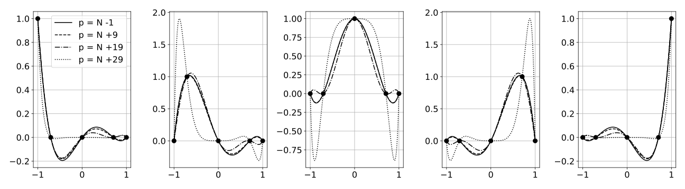
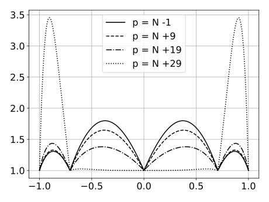
Lagrange functions (top) and Lebesgue function (bottom) for interpolation with a polynomial kernel \(k_{5, p}\)
on \(N=5\) Chebyshev points and various values of \(p\).
Lebesgue function
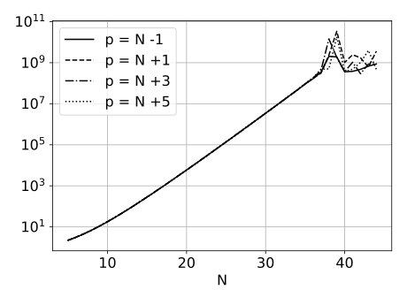
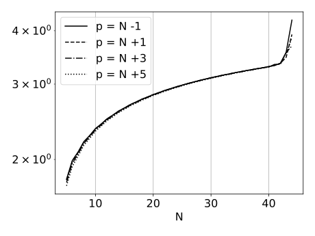
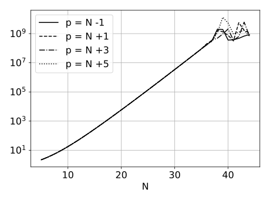
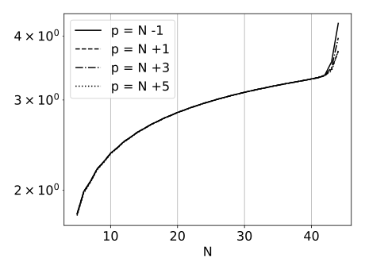
Growth of the Lebesgue constant associated to \(N=5, \dots, 45\) equally spaced (left) and Chebyshev (right) points. We test kernel interpolants
with various values of \(p\), and \(a=5\) (first row) and \(a=10\) (second row).